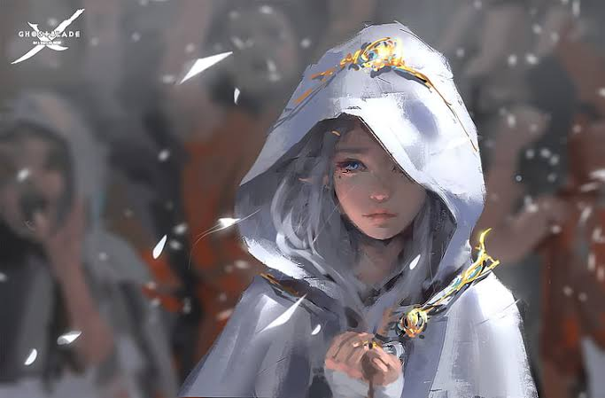
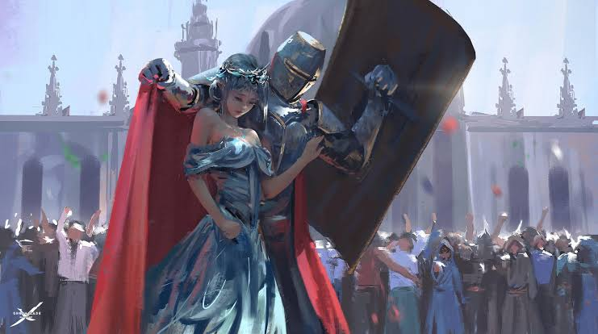
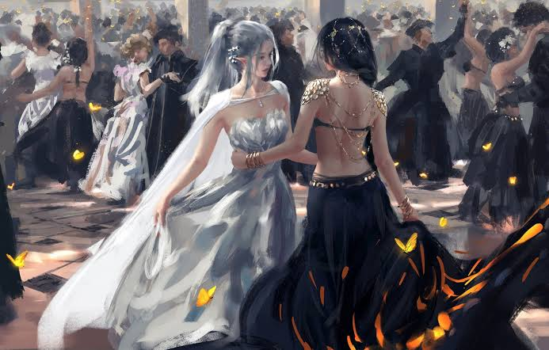

Stories are like plays in the minds and reality in the heart of readers
Royal war: tells the legendary tale of an assassin who works for the fierce-some Crown Prince, Lord of the Eastern Realm of the Kingdom (nation of Primsidon), she drowns in a sacred swam lake where many warriors and mighty were fallen, slain and buried. Rumor has it that it was a slaughter ground…. .but little did they know that in the depths of the lake it only accepts dead souls and not the living. It tells the legendary tale of an assassin who works for the fierce-some Crown Prince, Lord of the Eastern Realm of the Kingdom (nation of Primsidon), she drowns in a sacred swam lake where many warriors and mighty were fallen, slain and buried. Rumor has it that it was a slaughter ground…. .but little did they know that in the depths of the lake it only accepts dead souls and not the living. It tells the legendary tale of an assassin who works for the fierce-some Crown Prince, Lord of the Eastern Realm of the Kingdom (nation of Primsidon), she drowns in a sacred swam lake where many warriors and mighty were fallen, slain and buried. Rumor has it that it was a slaughter ground…. .but little did they know that in the depths of the lake it only accepts dead souls and not the living. It tells the legendary tale of an assassin who works for the fierce-some Crown Prince, Lord of the Eastern Realm of the Kingdom (nation of Primsidon), she drowns in a sacred swam lake where many warriors and mighty were fallen, slain and buried. Rumor has it that it was a slaughter ground…. .but little did they know that in the depths of the lake it only accepts dead souls and not the living. It tells the legendary tale of an assassin who works for the fierce-some Crown Prince, Lord of the Eastern Realm of the Kingdom (nation of Primsidon), she drowns in a sacred swam lake where many warriors and mighty were fallen, slain and buried. Rumor has it that it was a slaughter ground…. .but little did they know that in the depths of the lake it only accepts dead souls and not the living.

It tells the legendary tale of an assassin who works for the fierce-some Crown Prince, Lord of the Eastern Realm of the Kingdom (nation of Primsidon), she drowns in a sacred swam lake where many warriors and mighty were fallen, slain and buried. Rumor has it that it was a slaughter ground…. .but little did they know that in the depths of the lake it only accepts dead souls and not the living. It tells the legendary tale of an assassin who works for the fierce-some Crown Prince, Lord of the Eastern Realm of the Kingdom (nation of Primsidon), she drowns in a sacred swam lake where many warriors and mighty were fallen, slain and buried. Rumor has it that it was a slaughter ground…. .but little did they know that in the depths of the lake it only accepts dead souls and not the living. It tells the legendary tale of an assassin who works for the fierce-some Crown Prince, Lord of the Eastern Realm of the Kingdom (nation of Primsidon), she drowns in a sacred swam lake where many warriors and mighty were fallen, slain and buried. Rumor has it that it was a slaughter ground…. .but little did they know that in the depths of the lake it only accepts dead souls and not the living. It tells the legendary tale of an assassin who works for the fierce-some Crown Prince, Lord of the Eastern Realm of the Kingdom (nation of Primsidon), she drowns in a sacred swam lake where many warriors and mighty were fallen, slain and buried. Rumor has it that it was a slaughter ground…. .but little did they know that in the depths of the lake it only accepts dead souls and not the living. It tells the legendary tale of an assassin who works for the fierce-some Crown Prince, Lord of the Eastern Realm of the Kingdom (nation of Primsidon), she drowns in a sacred swam lake where many warriors and mighty were fallen, slain and buried. Rumor has it that it was a slaughter ground…. .but little did they know that in the depths of the lake it only accepts dead souls and not the living.

It tells the legendary tale of an assassin who works for the fierce-some Crown Prince, Lord of the Eastern Realm of the Kingdom (nation of Primsidon), she drowns in a sacred swam lake where many warriors and mighty were fallen, slain and buried. Rumor has it that it was a slaughter ground…. .but little did they know that in the depths of the lake it only accepts dead souls and not the living. It tells the legendary tale of an assassin who works for the fierce-some Crown Prince, Lord of the Eastern Realm of the Kingdom (nation of Primsidon), she drowns in a sacred swam lake where many warriors and mighty were fallen, slain and buried. Rumor has it that it was a slaughter ground…. .but little did they know that in the depths of the lake it only accepts dead souls and not the living. It tells the legendary tale of an assassin who works for the fierce-some Crown Prince, Lord of the Eastern Realm of the Kingdom (nation of Primsidon), she drowns in a sacred swam lake where many warriors and mighty were fallen, slain and buried. Rumor has it that it was a slaughter ground…. .but little did they know that in the depths of the lake it only accepts dead souls and not the living. It tells the legendary tale of an assassin who works for the fierce-some Crown Prince, Lord of the Eastern Realm of the Kingdom (nation of Primsidon), she drowns in a sacred swam lake where many warriors and mighty were fallen, slain and buried. Rumor has it that it was a slaughter ground…. .but little did they know that in the depths of the lake it only accepts dead souls and not the living. It tells the legendary tale of an assassin who works for the fierce-some Crown Prince, Lord of the Eastern Realm of the Kingdom (nation of Primsidon), she drowns in a sacred swam lake where many warriors and mighty were fallen, slain and buried. Rumor has it that it was a slaughter ground…. .but little did they know that in the depths of the lake it only accepts dead souls and not the living.

….the beautiful and elegant Princess Ping commits suicide as an attempt to escape the arranged marriage fixed between her and the Crown Prince….her last wish was given as instructed to be drown in the lake like her late sister….she died yet another resurrected winthin her body, causing the riyal house hold into a state of dilemma as she is unable to recognize her new form but filled with old memories….. realizes the princess had her dirty little secrets. ….the beautiful and elegant Princess Ping commits suicide as an attempt to escape the arranged marriage fixed between her and the Crown Prince….her last wish was given as instructed to be drown in the lake like her late sister….she died yet another resurrected winthin her body, causing the riyal house hold into a state of dilemma as she is unable to recognize her new form but filled with old memories….. realizes the princess had her dirty little secrets. ….the beautiful and elegant Princess Ping commits suicide as an attempt to escape the arranged marriage fixed between her and the Crown Prince….her last wish was given as instructed to be drown in the lake like her late sister….she died yet another resurrected winthin her body, causing the riyal house hold into a state of dilemma as she is unable to recognize her new form but filled with old memories….. realizes the princess had her dirty little secrets.
.jpeg)